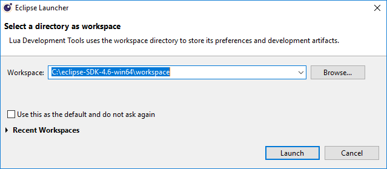
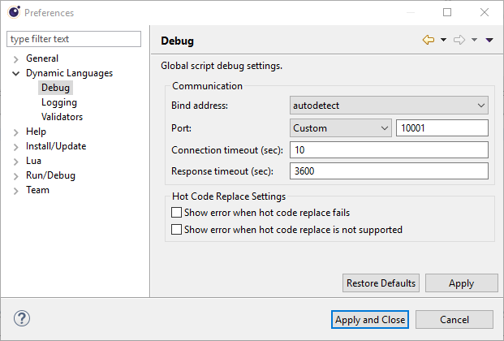
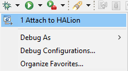

/ HALion Developer Resource / HALion Script / Diving Deeper /
Debugging with LDT
On this page:
- Installing LDT
- Setting Up a Debug Session
- Starting a Debug Session
- Stopping a Debug Session
- Using the LDT Debugger
External links:
HALion uses Lua Development Tools (LDT) by Eclipse Foundation as the front end for debugging. LDT is an open source software for Windows and Mac OSX that provides you with an integrated development environment (IDE) for Lua with tools like code assistance, debugging, syntax coloring, code formatting, and many more. LDT allows you to debug scripts that run in HALion. After configuring Attach Debug in LDT, you can connect a Lua Script module for debugging its script. In LDT, you can monitor the script step by step, inspect variables and evaluate expressions. This way, you can identify and remove errors from your script more easily.
More information about LDT and support from the Eclipse community can be found here:
Installing LDT
LDT can be downloaded from here:
- After downloading the package for your system, unpack the files into a folder of your choice.
❕ In addition, the Java SE 8 JRE (Windows) or the Java SE 8 JDK (Mac OSX) must be installed.
Windows
The Java SE 8 JRE can be downloaded from here:
https://www.oracle.com/technetwork/java/javase/downloads/jre8-downloads-2133155.html
Mac OSX
The Java SE 8 JDK can be downloaded from here:
https://www.oracle.com/technetwork/java/javase/downloads/jdk8-downloads-2133151.html
❕ Mac OSX might tell you that you need to install the legacy Java SE 6 runtime. Please ignore the message and install the Java SE 8 JDK instead.
Setting Up a Debug Session
Before starting a debug session, some preparations are required. In the following, you will be guided through all the necessary steps.
Starting LDT
Windows
- Double-click LuaDevelopmentTools.exe.
Mac OSX
- Double-click the Eclipse application.
Selecting a Workspace
Upon start of LDT, the Eclipse Launcher will ask you to select a directory as workspace.
- Choose a location for Workspace and click Launch.

Creating a Project
-
Open File > New > Project, select Lua Project and click Next >.
-
Enter a Project name.
-
Select Create project at existing location (from existing source) and set Directory to the location of your scripts.

-
Click Next >. The contents of the specified directory will be scanned. You can ignore the warning that says, "Your project has no source folder defined."
-
Click Finish.

The Lua scripts that have been found will appear in the Script Explorer of LDT. You can load them via double-click.

Configuring Attach Debug
In order for incoming debug sessions to be accepted, you must create a Lua Attach to Application launch configuration.
- Open Run > Debug Configurations...
- Select Lua Attach to Application and click the New button to create a configuration of this type.
- Enter a name and click Apply.
- Click Close, since we do not want to debug at the moment.

Changing the Debug Port on Mac
On Mac, you must change the debug server port before you can start a debug session.
- Open Lua Development Tools Product > Preferences... and go in Dynamic Languages > Debug.
- Change Port to "Custom" and enter the value "10001".
- Click Apply and Close.

❕ Do not change the debug server port on Windows.
Starting a Debug Session
Please load the following code example for your first debug session.
Loading the Code Example
Create a new Lua file in LDT.
- In File > New > Other..., select Lua File and click Next >.
- Enter a file name and click Finish.

❕ New Lua files will be saved to the directory that you specified for the Lua project.
- Copy the following code example to the editor area of LDT.
Example
function onNote(ev)
print(ev)
postEvent(ev)
end
- Click
 to save the script file in LDT.
to save the script file in LDT.
Now it is time to start HALion and to load the script.
- Open HALion, create a program with a synth zone and a Lua Script module.
- Load the script file from the location where you saved it.

❕ The script running in the Lua Script module of HALion must be loaded from the same location where LDT saved it. This ensures that the script in LDT and HALion are physically the same file. Otherwise, the debugger cannot establish a connection between LDT (debugger server) and the Lua Script module (debugger client).
Opening the Debug Perspective
Most of the debug functionality can be found in the Debug perspective of LDT.
- Click in the top right corner of the editor area.
- Alternatively, in Window > Perspective > Open Perspective > Other..., select Debug and click Open.
Breakpoints can be set by double-clicking the margin.
- Double-click the margin in line two, for example.

Connecting the Lua Script module with LDT
The following steps will establish a connection between LDT (debugger server) and the Lua Script module (debugger client).
- Open HALion, go to the Lua Script module and click the Connect to Debugger
 button. This defines the Lua Script module as debugger client. The Connect to Debugger button turns blue to indicate that it waits for the debugger server.
button. This defines the Lua Script module as debugger client. The Connect to Debugger button turns blue to indicate that it waits for the debugger server. - Open LDT and go to Run > Debug Configurations. In Lua Attach to Application, select the configuarion you have previously created.
- Click Debug to start the debugger server.
The Connect to Debugger button in HALion turns green  if debugger server and client are connected.
if debugger server and client are connected.

As a basic test, try the following steps with the code example from above and a breakpoint in line two:
-
Play a MIDI note. LDT will break into the onNote function.

-
Click Resume
 or press (F8) to continue the script. HALion prints the event and outputs the note.
or press (F8) to continue the script. HALion prints the event and outputs the note.
Stopping a Debug Session
To stop the debug session:
- Open the Lua Script module in HALion and click the Connect to Debugger button.
The Connect to Debugger button turns gray and the Debug area in LDT says the Lua Attach to Application session has <terminated>.

Using the LDT Debugger
From now on, the debug session can be started from the Debug menu on the LDT toolbar.

Tips for using the LDT debugger can be found here: